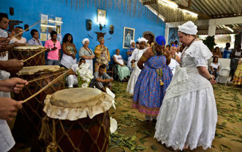

Candomblé
Candomblé é uma religião afro-brasileira derivada de cultos tradicionais africanos, na qual há crença em um Ser Supremo e culto
dirigido a forças da natureza personificadas na forma ancestrais divinizados: orixás, voduns ou inquices, dependendo da nação.
História do Candomblé no Brasil

No Brasil, a história do Candomblé se mistura com a do Catolicismo.
Proibidos de continuar com sua religião, os escravos usavam as imagens dos santos para escapar da censura imposta pela Igreja.
Isto explica o sincretismo encontrado no Candomblé no Brasil, algo que não se verifica na África.
Nos dias de hoje, porém, muitas casas de candomblé não aceitam o sincretismo e buscam retornar às origens africanas.
Igualmente, na versão brasileira, temos uma mistura de orixás de várias regiões do continente africano.
Isto se deve ao fato dos negros que desembarcaram para serem escravos, durante a escravidão no Brasil, eram de várias partes da África.
Cada Orixá representa uma força ou personificação da natureza e também representava um povo ou uma nação
O Candomblé, como prática religiosa, ganhou contornos nítidos na Bahia em meados do século XVIII e definiu-se durante o século XX.
Atualmente, existem milhões de praticantes em todo Brasil, podendo chegar a mais de 1,5% da população nacional.
A fim de preservar esta herança da cultura africana, a Lei Federal 6292, de 15 de dezembro de 1975, tornou certos terreiros de candomblé patrimônio material ou imaterial passível de tombamento.